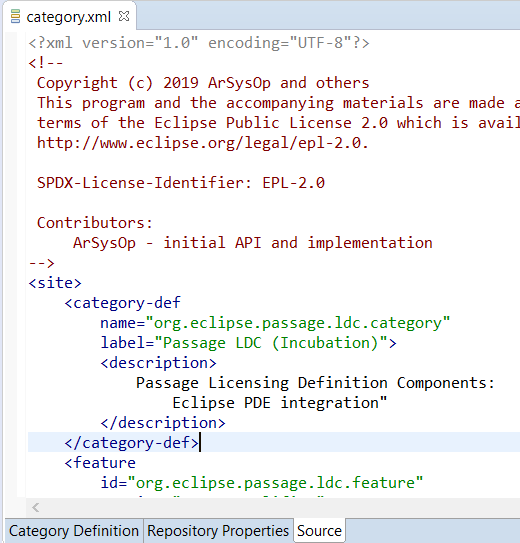
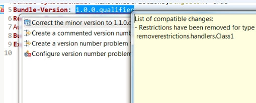

Here are descriptions of some of the more interesting or significant changes made to the Plug-in Development Environment (PDE) for the 4.12 release of Eclipse. They are grouped into:
See also the Eclipse Platform What's New and JDT What's New documents.
We also recommend to read the Tips and Tricks.
Dialogs, Wizards and Views |
|
| Target Platform preferences | The Preferences > Plug-in Development > Target Platform preference page now allows to change the height balance between 'Target definitions' and 'Locations' areas. |
Editors |
|
| 'Source' tab for Product and Category Editor |
The Product Editor and Category Editor now have a 'Source' tab to enable direct access to their manifests.
 |
API Tools |
|
| Removing API restriction results in API error |
Removing PDE API tools restriction such as @noextend, @noimplement and @noinstantiate now results in an incompatible bundle version API tool error, since clients of this code can
access more APIs after the removal.
A quick fix for this error is available, and it increases the minor version to reflect the code changes.  |
| Run API analysis as application |
To ease automation without Ant, the API Tools analysis can be performed using a regular Eclipse application
named org.eclipse.pde.api.tools.apiAnalysis.
It can receive the following parameters:
The API analysis uses the project settings, but forces the incompatible api component version report major without breaking change and incompatible api component version report minor without api change rules breakage to be reported as errors. Example of invocation can look like:
Additionally to the potential non-
Here is an example of how this could be used in Tycho to trigger API checks in a Tycho build, in
<project>
[...]
<build>
[...]
<plugins>
[...]
<plugin>
<artifactId>maven-dependency-plugin</artifactId>
<executions>
<execution>
<id>list-dependencies</id>
<goals>
<goal>list</goal>
</goals>
<phase>verify</phase>
<configuration>
<outputAbsoluteArtifactFilename>true</outputAbsoluteArtifactFilename>
<outputScope>false</outputScope>
<outputFile>${project.build.directory}/dependencies.txt</outputFile>
</configuration>
</execution>
</executions>
</plugin>
<plugin>
<groupId>org.eclipse.tycho.extras</groupId>
<artifactId>tycho-eclipserun-plugin</artifactId>
<version>1.4.0</version>
<executions>
<execution>
<id>api-analysis</id>
<goals>
<goal>eclipse-run</goal>
</goals>
<phase>verify</phase>
<configuration>
<applicationsArgs>
<!-- need to set workspace to a dir that's not a child of the project -->
<arg>-data</arg>
<args>${project.basedir}/../target/${project.artifactId}-apiAnalyzer-workspace</args>
<args>-application</args>
<args>org.eclipse.pde.api.tools.apiAnalysis</args>
<args>-project</args>
<args>${project.basedir}</args>
<args>-baseline</args>
<args>default</args>
<args>-dependencyList</args>
<args>${project.build.directory}/dependencies.txt</args>
<args>-failOnError</args>
</applicationsArgs>
<repositories>
<repository>
<id>eclipse-4.12</id>
<layout>p2</layout>
<url>https://download.eclipse.org/eclipse/updates/4.12-I-builds/</url>
</repository>
</repositories>
<dependencies>
<!-- This will constitute the default baseline -->
<dependency>
<artifactId>org.eclipse.sdk.ide</artifactId>
<type>p2-installable-unit</type>
</dependency>
</dependencies>
</configuration>
</execution>
</executions>
</plugin>
</plugins>
</build>
</project>
|